2-SAT
給你一個布林運算式，格式如下：
\[ (x_1 \lor \lnot x_2) \land (\lnot x_3 \lor \lnot x_1) \land (x_{4} \lor x_{3}) \]
能否為每個變數設值使得整個算式為 True？
交錯路徑

一些相關的問題
- 最大獨立點集：一個最大的點集 \( V' \) 使得裡面的點都不相鄰。其大小記做 \( I(G) \)。
- 最大匹配數：前面定義過了。其大小記做 \( M(G) \)。
- 最小點覆蓋：最小的一個點集，使得所有的邊都至少與點集裡的一個點相鄰。其大小記做 \( C_v(G) \)。
-
最小邊覆蓋：最小的一個邊集，使得所有的點都至少與邊集裡的一個邊相鄰。其大小記做 \( C_e(G) \)。
\[ f(n) = \sum_{k = 0}^{n-1} f(n-k-1) f(k) , \quad f(0) = 1\]卡特蘭數